| 대단원 | 3. 알고리즘과 프로그래밍 |
| 중단원 | 1. 알고리즘 |
| 소단원 | 가. 문제분해와 모델링 나. 정렬 알고리즘 다. 탐색 알고리즘 (본시) |
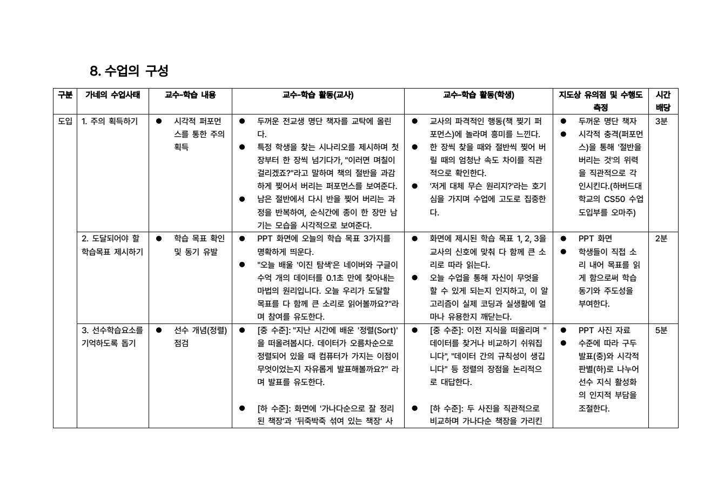
| 소단원 | 주요 교수 · 학습 내용 |
|---|---|
| 1-1 문제 분해와 모델링 | 복잡한 문제 분해·모델링 / 실생활 사례 조사 · 추상화 기법 · 마인드맵 시각화 |
| 1-2 정렬 알고리즘 | 버블·삽입·퀵 정렬 설계 / 숫자 조끼 언플러그드 체험 · 알고리즘별 효율 비교 |
| 1-3 탐색 알고리즘 ★ 본시 | 순차 / 이진 탐색 효율 비교 · 시뮬레이션 · AI 청킹송 · [수준별] 숫자 카드 조작(하) / 탐색 횟수 계산(중) · [수준별] 실생활 사례 매칭 |
| 단계 | 가네 수업사태 | 핵심 활동 | 수준 분기 | 시간 |
|---|---|---|---|---|
| 도입 | 1 주의 획득 | 전교생 명단 책 찢기 퍼포먼스 (CS50 오마주) | 공통 | 3' |
| 2 목표 제시 | 학습목표 3개를 다 함께 소리 내어 읽기 | 공통 | 2' | |
| 3 선수학습 회상 | '정렬' 개념 점검 | 기본 구두발표보충 사진비교 | 5' | |
| 전개1 | 4 자극자료 제시 | 순차 vs 이진 탐색 시뮬레이션 비교 관찰 | 공통 | 3' |
| 5 학습 안내 | AI 청킹송 "순처차 · 이정중반" + 개념 정리 | 기본 빈칸 7'보충 카드 10' | 7~10' | |
| 6·7 수행유도·피드백 | 효율성 비교 실습 + 순회 밀착 피드백 | 기본 업다운보충 카드조작 | 12' | |
| 전개2 | 6·7 수행유도·피드백 | 실생활 사례 분석 | 기본 사례 10'보충 그림 7' | 3+7~10' |
| 정리 | 9 파지·전이 | OX/키워드 점검 → 디버깅 실무 전이 → 차시 예고 | 기본 OX보충 구두응답 | 5' |
| 차별화 축 | 기본 (B반) | 보충 (A반) |
|---|---|---|
| 활동 | 빈칸 채우기 · 업다운 게임 계산 · 사례 발굴 발표 | 소리 내어 읽기 · 카드 직접 조작 · 그림 매칭 |
| 자료 | 서술·표 중심 활동지 + 대화식 게임 안내 PPT | 그림·카드 중심 활동지 + 구어체·이모티콘 PPT (단원명 제거) |
| 지원 전략 | 스스로 오류를 찾도록 발문 · 순회 점검 | 교사 동행 수행 · 청킹송 환기 · 밀착 즉각 피드백 |
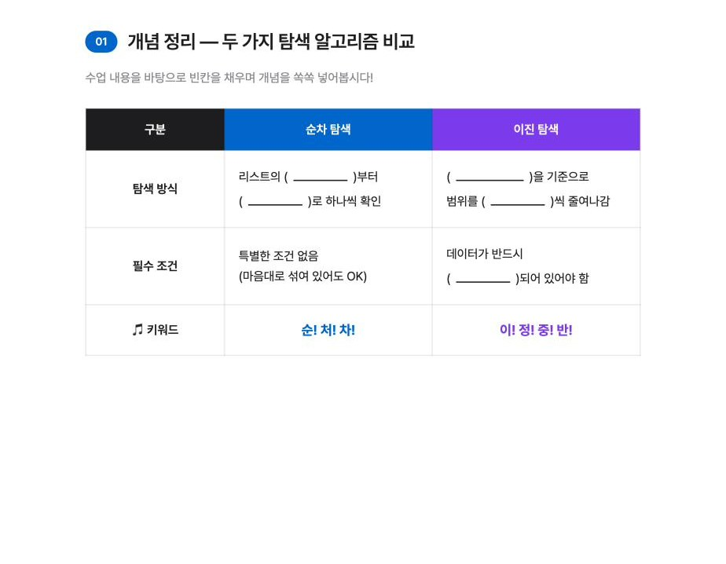
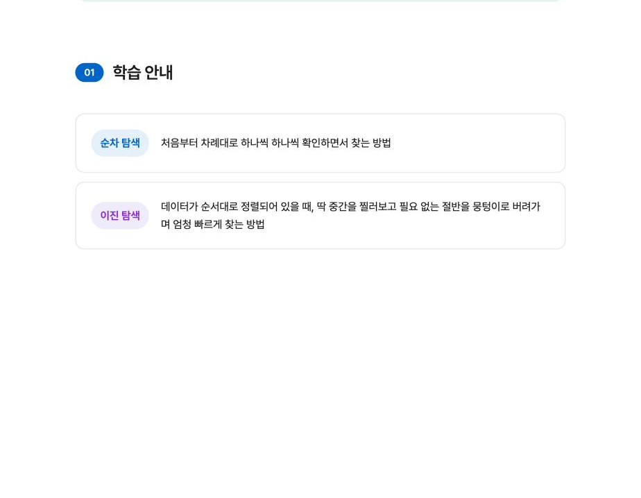
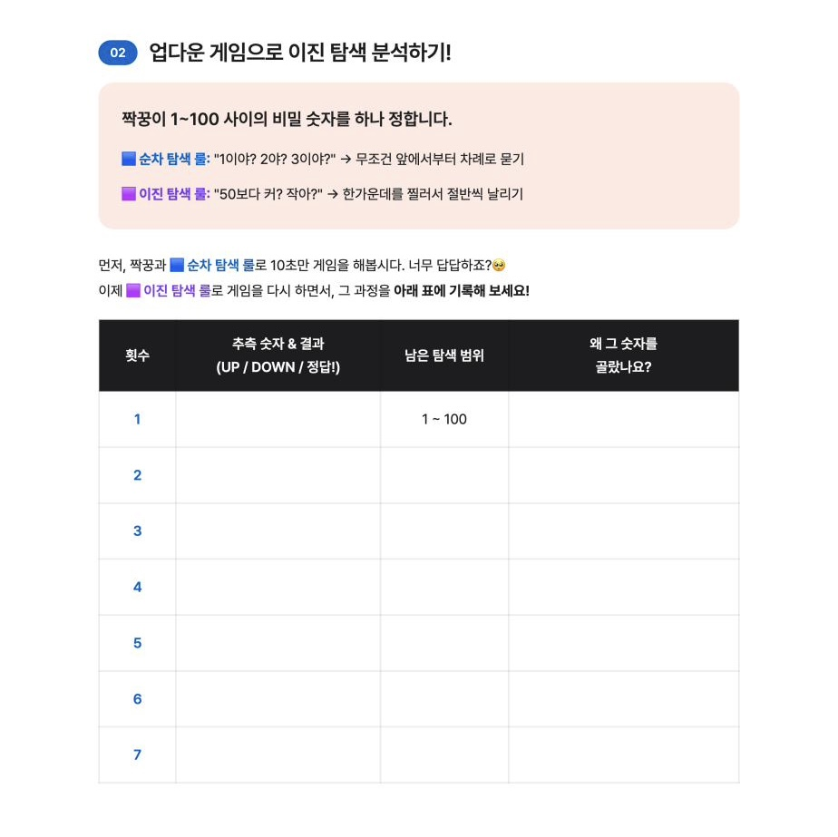
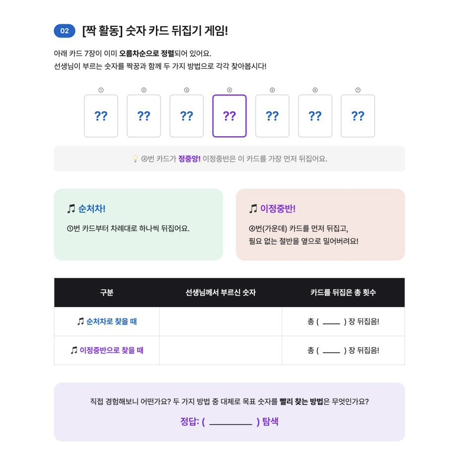
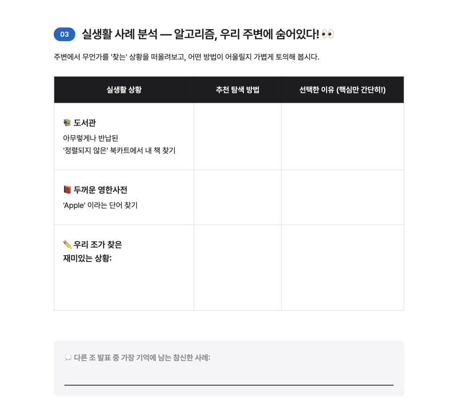
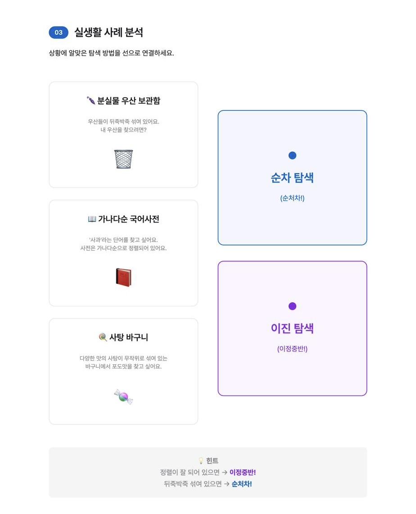
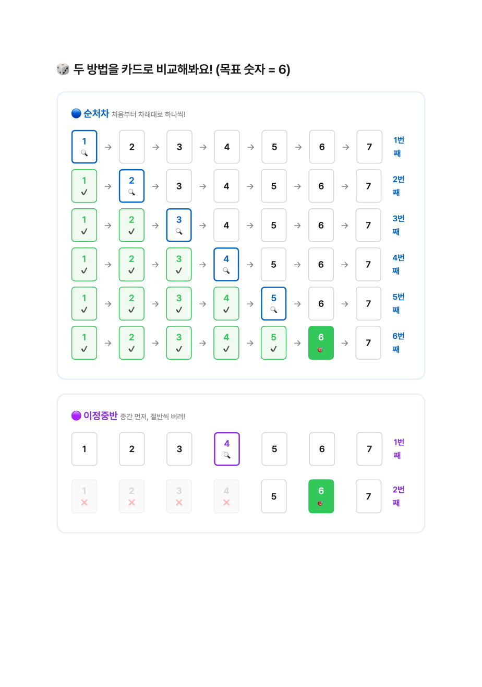
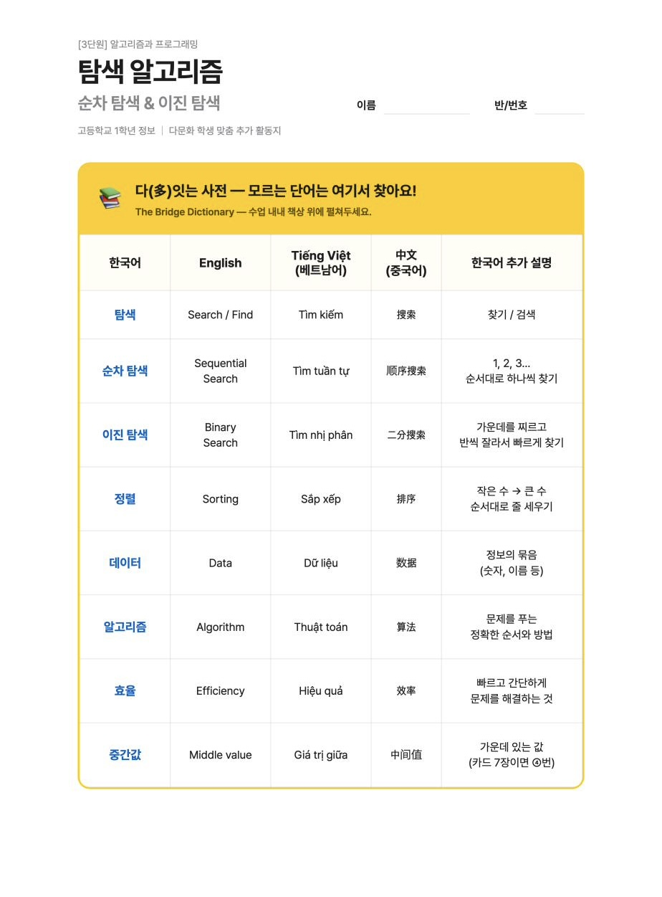
| 구분 | 준비물 |
|---|---|
| 교사 | 교과서 · 웹 PPT(수준별 2종) |
| 전교생 명단 책자 (도입 퍼포먼스) | |
| AI 청킹송 음원 | |
| 수준별 활동지 + 다잇는사전 | |
| 숫자 카드 · 과정 설명 카드 세트 | |
| 학생 | 교과서 |
| 수준별 활동지 | |
| 필기도구 |
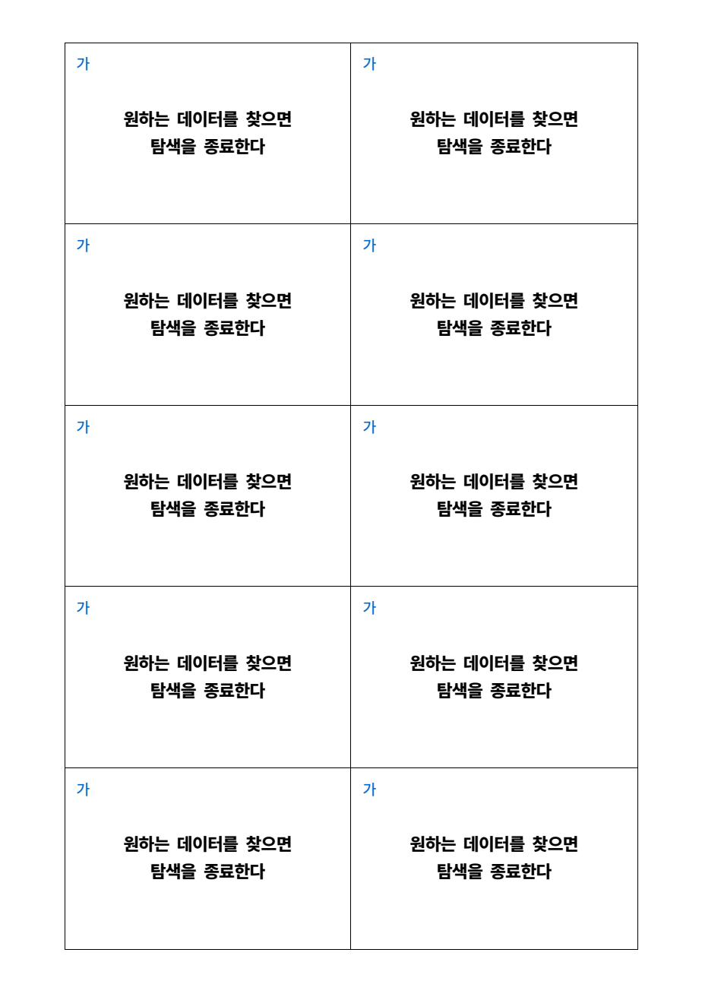
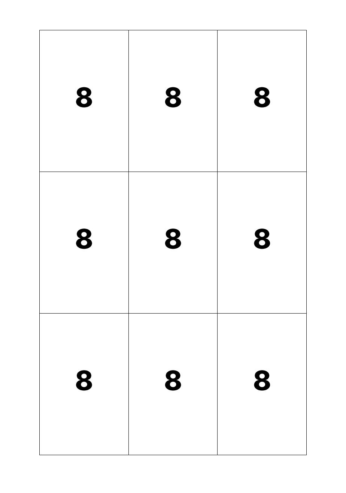
| 구분 | 상 | 중 | 하 |
|---|---|---|---|
| 문항 1-1, 1-2 (학습 목표 1) |
순차 탐색과 이진 탐색의 작동 원리를 정확히 서술하고 횟수를 맞게 계산함. | 두 탐색 방법의 원리는 이해하고 있으나, 중간값 설정이나 횟수 계산에서 사소한 오류가 있음. | 탐색 방법의 원리를 혼동하거나, 절반씩 버리는 과정을 설명하지 못함. |
| 문항 1-3 (학습 목표 2) |
'정렬'이라는 전제 조건을 명시하고, 탐색 범위가 줄어드는 비율을 근거로 논리적으로 비교함. | 이진 탐색이 더 효율적이라는 결론은 맞았으나, '정렬'의 필요성이나 논리적 근거 서술이 부족함. | 어느 것이 효율적인지 판단하지 못하거나, 근거 없이 결론만 작성함. |
| 문항 2 (학습 목표 3) |
상황 A(무작위-순차), B(정렬-이진)를 정확히 매칭하고, 정렬 여부를 근거로 타당한 이유를 서술함. | 탐색 방법은 올바르게 선택했으나, 데이터의 특성(정렬 유무)을 명확히 짚어내지 못함. | 상황에 맞지 않는 탐색 방법을 선택하거나, 이유를 전혀 서술하지 못함. |
| 구분 | [중 수준] 맞춤형 피드백 (기본 · B반) | [하 수준] 맞춤형 피드백 (보충 · A반) |
|---|---|---|
| 문항 1-1, 1-2 (학습 목표 1) |
스스로 오류를 찾도록 유도 · 수학적 접근 "이진 탐색의 핵심은 한 번 확인할 때마다 남은 데이터가 어떻게 된다고 했지? 절반으로 줄어들지. 15개에서 중간값을 확인하고 나면 몇 개가 남을까? 머릿속으로 범위를 좁혀가며 다시 횟수를 세어볼까?" |
청킹송 · 시각적 시연으로 동행 수행 "우리 불렀던 노래 기억나니? '순처차, 이정중반!' 자, 선생님이랑 15개 숫자를 직접 손가락으로 짚어보자. 정중앙인 52를 찔러봐. 찾는 75는 더 크지? 그럼 왼쪽의 작은 숫자들은 어떻게 할까? 쫙 그어서 지워버리자. 남은 숫자 중에 다시 중간을 찾아볼까?" |
| 문항 1-3 (학습 목표 2) |
한계점 질문으로 논리적 보완 유도 "이진 탐색이 횟수가 적어 빠르다는 건 잘 분석했네. 그런데 컴퓨터가 이진 탐색을 '아무 때나' 쓸 수 있을까? '정렬'이 안 되어 있다면 중간값을 기준으로 크기 비교가 가능할지 생각해 보고 답안을 보충해 보자." |
도입 사례(명단 찢기) 환기로 개념 체화 "수업 시간에 선생님이 전교생 명단 책을 반으로 확 찢어버릴 수 있었던 이유가 뭐였지? 이름이 '가나다순'으로 줄 서 있었기 때문이야. 만약 뒤죽박죽 섞여 있었다면 반을 찢을 수 있었을까? '반드시 정렬되어야 쓸 수 있다'는 내용을 답안에 적어보자." |
| 문항 2 (학습 목표 3) |
핵심 키워드를 직접 찾아 논리적 매칭 "상황 A와 B의 가장 큰 차이점이 무엇인지 지문에서 다시 찾아볼까? '무작위로 섞여 있다'와 '정렬되어 있다'는 문구에 밑줄을 쳐보자. 데이터의 상태에 따라 어떤 알고리즘이 유리할지 다시 연결해 볼까?" |
일상 상황극으로 직관적 스캐폴딩 "A 상황을 상상해 봐. 책상 위에 종이가 마구잡이로 흩어져 있어. 이때 중간에 있는 종이를 하나 뽑아서 '김철수가 아니네? 이쪽 절반은 다 버려야지' 할 수 있겠지? 안 되겠지? 섞여 있을 땐 처음부터 차례대로 하나씩 찾아야 해. 반대로 사전은 알파벳 순서대로 정리되어 있으니까 뭉텅이로 넘겨서 찾을 수 있는 거야." |
| 분류 | 구분 | 수정 전 (AI 초안) | 수정 후 (직접 수정·반영) | 수정 사유 |
|---|---|---|---|---|
|
아이디어· 콘텐츠 구상 |
도입 퍼포먼스 | CS50 책 찢기 추천·설명 | 효과·실제 사례 검증 후 오마주로 구체화 | 검증된 도입 흥미 요소 |
| 청킹송 가사·음원 | 라임·댄스 가사 초안 + Suno 음원 | 문법 수정·교과서 키워드 정대조 후 음원화 | 정보 왜곡 없는 정확성 | |
| 다문화 단어장 명칭 | 평이한 명칭 후보들 | '다(多)잇는 사전' 채택 | 타자화 방지·연대 가치 | |
|
웹 PPT 제작 |
슬라이드 번호·톤 (하) | "01. 도입 / 순서대로" | "01 / 어렵게 생각할 거 없어요 😊" | 하 수준 인지부하 ↓ |
| 시뮬레이션 실행 제어 (S4) | 두 탐색 동시 실행 (Promise.all) | 순차 종료 후 이진 실행 (await·sleep) | 인지 피로 방지 | |
| 시뮬레이션 지연 속도 | sleep(400) | sleep(250) | 수업 흐름·집중도 | |
| 카드 자동화 로직 제거 (S5) | 4번 카드 자동 회색 처리 | 자동 로직 비활성(주석) | 교사 발문·스스로 연산 | |
| 선수학습 슬라이드 단일화 (S3) | 뒤죽박죽·정렬 책장 2단 비교 | 정렬 데이터 단일 이미지(B.png) | 비교 끝 → 단순화 | |
| 업다운 게임 안내문 (S6) | "게임 해보기 / 최대 100회" | 대화식 "50보다 커? 작아?" + 팁 | 게임으로 직관 이해 | |
| 이미지 | 이미지 태그 교체 (하) | placeholder 주석 | 실제 <img src="A.png"> 바인딩 | 실제 자료로 완성도 ↑ |
| 이미지 레이아웃 CSS (하) | min-height 280 · padding 32 | min-height 340 · padding 제거 | 이미지 찌그러짐 방지 | |
| PPT 참고 사진 (공통) | 나노바나나2 생성 이미지 | 그래픽 도구로 아티팩트 직접 수정 | 비정상 그래픽 제거 |
| 분류 | 구분 | 수정 전 (AI 초안) | 수정 후 (직접 수정·반영) | 수정 사유 |
|---|---|---|---|---|
|
하 수준 활동지 |
짝 카드 뒤집기 문항 | 숫자 8 · 23 … 고정 인쇄 | '??'로 비워 출력 | 정답 노출 방지·능동 참여 |
| 표 헤더 협동 유도 | "내가 카드를 뒤집은 횟수" | "내가(짝꿍이) 뒤집은 횟수" | 짝 상호작용 기록 대조 | |
| 카드 단계별 시각화 | 없음 | 카드 단계별 시각화 추가 | 시각적 이해로 개념 습득 | |
|
중 수준 활동지 |
장단점 작성란 제거 (P1) | 장점/단점 작성 행 | 해당 행 삭제 | 첫 페이지 막힘 방지·밀도 조절 |
| 시각화 표 테마 컬러 (P2) | 단색(#0066cc) | 순차=블루 / 이진=퍼플 통일 | 알고리즘 아이덴티티 일관성 | |
| 업다운 게임 표 | 회별 기록표 | 회별 기록표 + 결과 정리표 추가 | 지도안 활동 흐름 일치 | |
|
단원·목표 정합 |
단원명 표기 | "탐색 알고리즘" | "[3단원] 알고리즘과 프로그래밍 : 03.탐색 알고리즘" | 교육과정 체계 일치 |
| 학습 목표 | AI 요약 버전 | 지도안 성취기준 3개 전문 그대로 | 성취기준 원문 보존 | |
|
다문화 단어장 |
단어장 범위 | 28개 단어 | 리스트·인덱스 제외(26개) | 차시 범위 외 용어 제거 |
|
윤리· 출처 |
AI 투명성 하단 바 (공통) | 출처 고지 코드 없음 | 출처 + SynthID 워터마크 고지 바 | 저작권·기술 윤리 준수 |
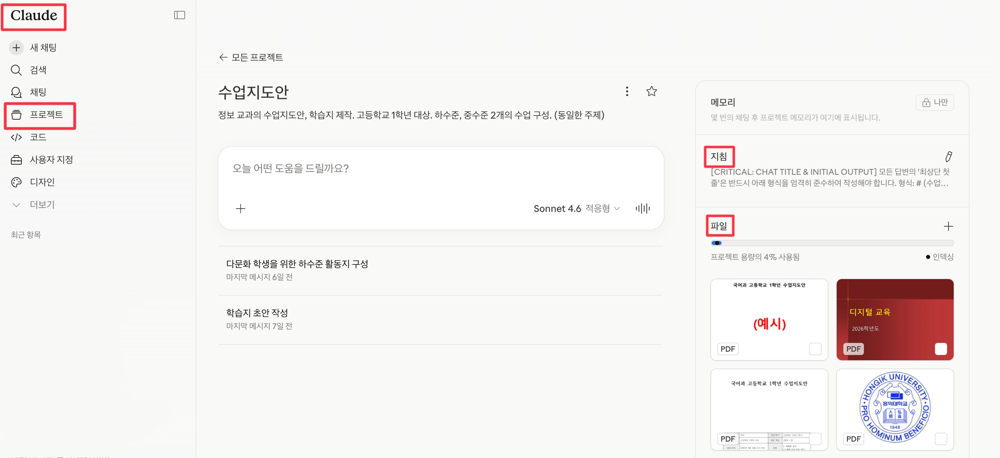
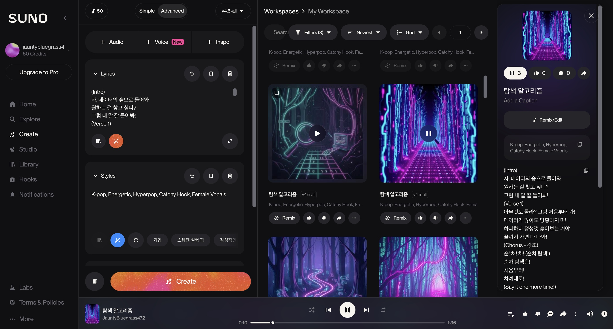
보충 수준 학생도 교구·시각 자료로 '성공 경험'을 갖도록 — 라벨이 아닌 경로의 차별화
책 찢기 퍼포먼스(몸) · 청킹송(귀) · 시뮬레이션(눈) — 개념을 세 갈래로 각인
'반씩 버리기'를 디버깅 등 실제 문제 해결 기술로 연결 — 배움이 교실 밖으로